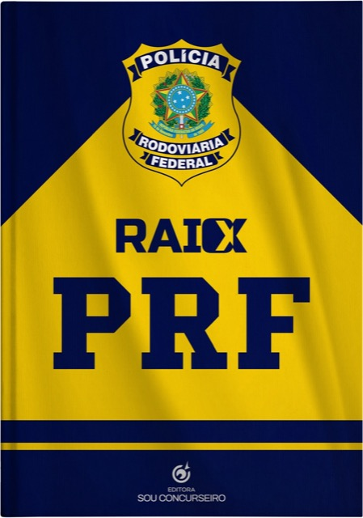
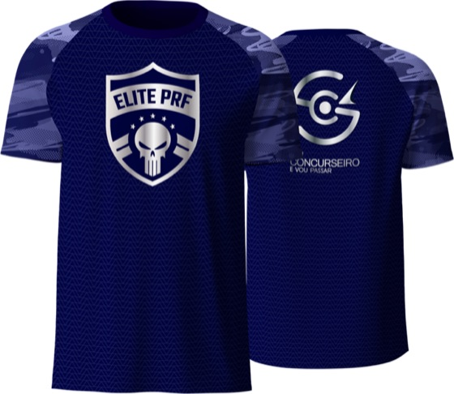

Você tem perfil pra começar. O que falta é um plano possível.
Em 2 noites ao vivo, o Delegado Fábio Silva vai te mostrar o Método 2 Horas PRF: como estudar pra PRF com cerca de 2 horas por dia, focando no que mais cai e organizando a sua rotina real — pra quem trabalha o dia inteiro, tem pouco tempo e precisa de um plano possível, não de um cronograma de fantasia.
O que muda em 2 noites
A diferença entre quem passa e quem desiste não é estudar mais — é começar com método, direção e decisão.
Hoje
- Sem saber por onde começar
- Achando que não tem tempo
- Esperando o edital sair pra agir
- Tentando estudar tudo ao mesmo tempo
Depois do evento
- Rotina possível com cerca de 2h por dia
- Prioridade nos assuntos que mais caem
- Plano possível — não cronograma de fantasia
- Começando antes da multidão
As 2 noites que destravam sua preparação
Dor → método → plano. Você sai da segunda noite com um caminho pronto.
O Método 2 Horas na prática
Como transformar pouco tempo, cansaço e falta de direção em uma preparação organizada. Você vai entender como sair do improviso e priorizar os assuntos que mais caem — em vez de tentar estudar tudo ao mesmo tempo.
Seu plano possível
Como montar teoria, revisão e questões dentro de cerca de 2 horas por dia, com a metodologia aplicada na preparação dos nossos alunos aprovados. Um plano possível — não um cronograma de fantasia.
Quem confiou no método
Resultados reais de quem estudou com direção — não com sorte.
Muito mais que um evento: kit completo + seu plano individual
O Ingresso VIP libera o Kit Método 2 Horas PRF na hora — e ainda inclui o Plano de Estudos Personalizado do seu edital.


